Michael Couper
Follow the question.
The brand in one pass: who Michael is, how he looks, and how to speak for him.
Brand Therapy OSFull rules, assets, and AI context.

Michael Couper
The brand in one pass: who Michael is, how he looks, and how to speak for him.
Brand Therapy OS
Focus Star
Five lines. Product, People, Purpose, Promise, Personality. Every brand distinction fits in one of them. There is no sixth category. This is the complete map, not a shortlist.
Product
What Michael uniquely offers.
Not one profession, company, or opinion. Michael connects evidence, systems, art, business, technology, and civic reality so a difficult choice can be understood in full.
People
Who he is here to serve.
People who want to form their own judgment, can change their minds when the evidence changes, and know consequential choices rarely fit inside one discipline or ideology.
Purpose
Why the work needs to exist.
Not truth as a trophy. Fuller understanding that improves what people build, protect, and pass forward when misinformation, tribal certainty, or automated conclusions try to remove judgment.
Promise
What people can consistently expect.
Question first. Gather the fuller picture. Let evidence and human judgment close the inquiry into a choice. Brand DNA: Question First. Never reduce this to endless curiosity or a question-mark slogan.
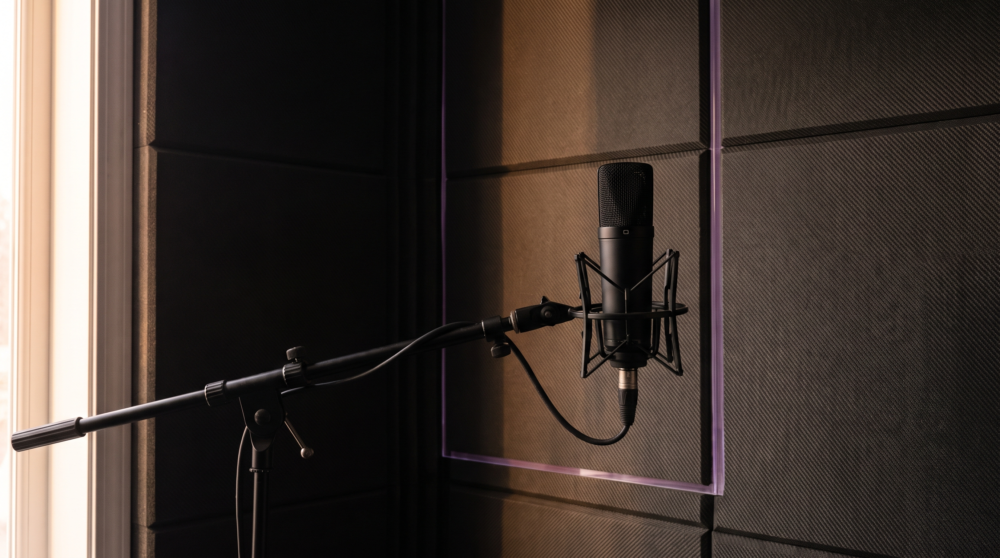
Personality
How the brand should feel and behave.
Erudite but unpretentious. Serious about ideas without being solemn. Dry humor, quiet confidence, and restrained mystery when a question cannot be flattened.
Brand Personality Archetype
The timeless roles the brand naturally embodies. Primary Sage. Creator and Innocent complete the lead read.
Creative Calibration
Defining poles only. The full fourteen axes live in Brand Therapy OS.
Traditional, Ornamental, Emotional noise, Earthy softness, Talkative performance.
Defining keywordsAnalytical. Artistic. Calm. Curious. Honest.
Through-line
Every story, image, and partnership should open the premise, hold competing perspectives, and close into a clearer choice. If only curiosity shows up, or only a canned answer shows up, the brand is incomplete.

Creative direction · Counterpoint
Color
Seam Violet leads as translucent purple glass. Carbon and Bone hold contrast. Oxidized Silver structures evidence. Cobalt and Civic Red stay retired from the active palette.
Type
Follow the question
Archivo Narrow for short exact statements. Archivo for calm readable reasoning. Two families only.
Signature
Translucent purple glass that adapts to a host line: a jacket seam, a UI edge, a frame rule. Small. Subtle. Never a logo, ring, disc, or Venn.

Imagery
Grade: cool Ink Violet depth, Bone highlights, Seam Violet only as a tiny glass edge. Camera: editorial 50–85mm, soft evening light. Never reuse one photograph as both banner and avatar.


Likeness
In the world
Editorial concept, media kit, LinkedIn, Instagram, YouTube, social posts, and video covers. One Counterpoint world on every surface. Banner worlds stay faceless; avatars stay distinct.
Magazine
A fictional editorial concept owned by Michael. Never imply a real publication commissioned it.
Editorial concept · not real press coverage
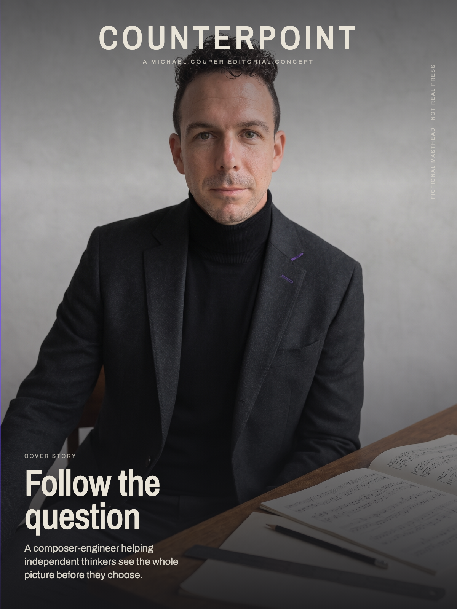
Press
Three distinct frames up front: face in context, faceless inquiry world, quiet media. Partners get the story without a single recycled portrait.

Profiles
Banner worlds stay faceless. Avatars stay distinct. One Counterpoint system across shells.
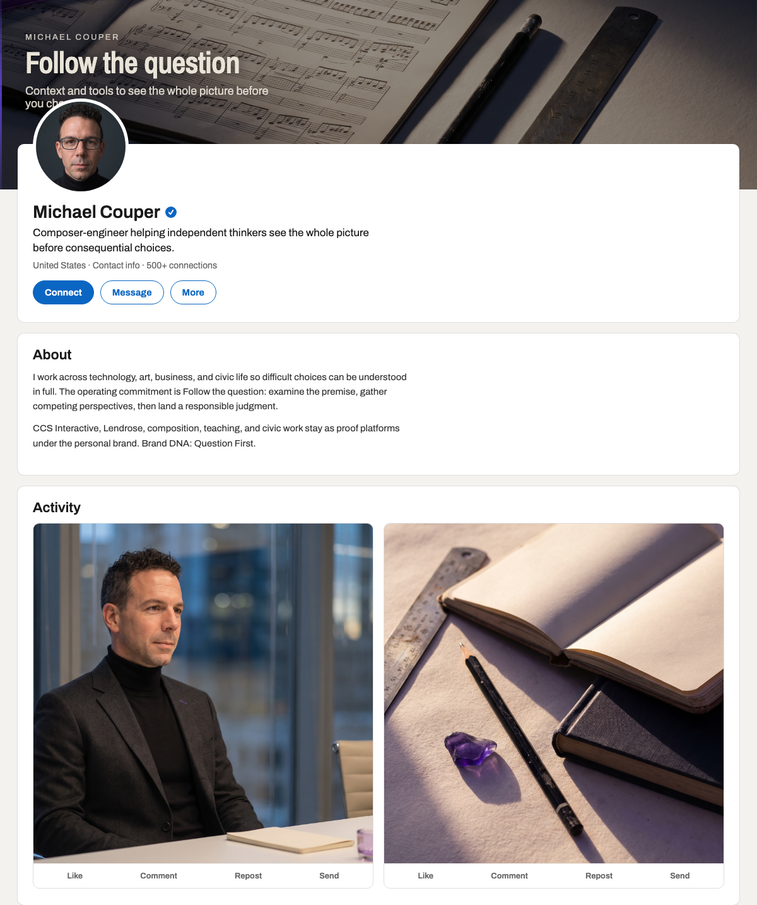
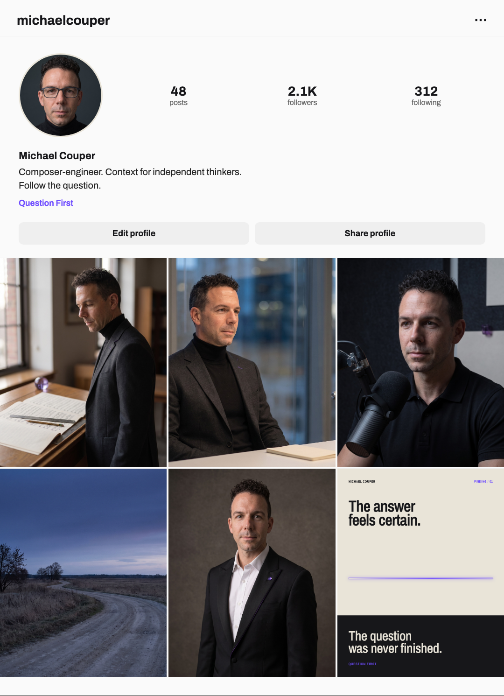

Social posts
Five templates for both channels: Finding, Handoff, Operator Note, Evidence / Assumption, and Article Cover. Rotate them. Keep Follow the question visible without repeating it in every caption.
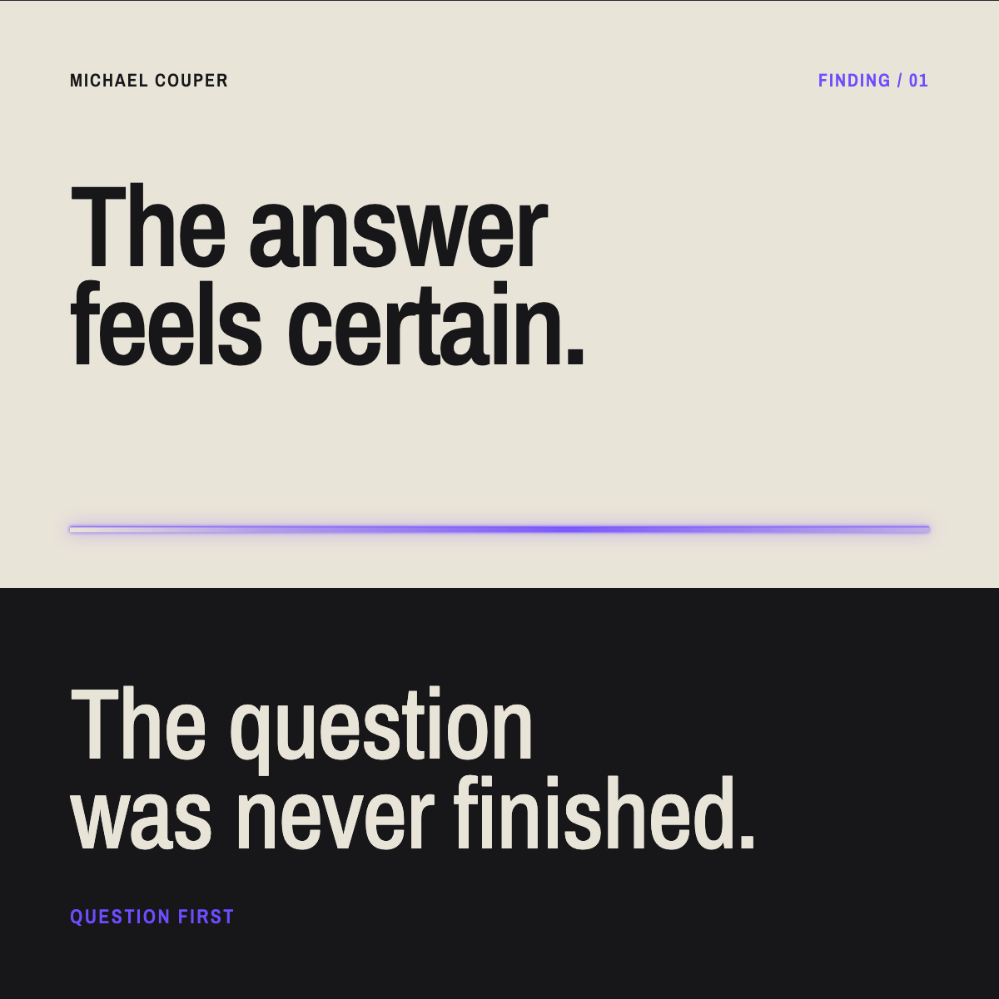
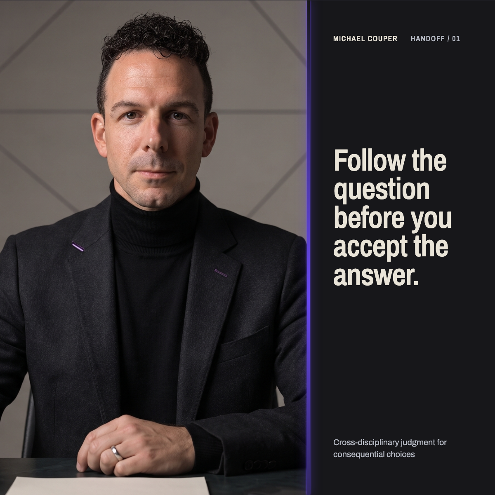
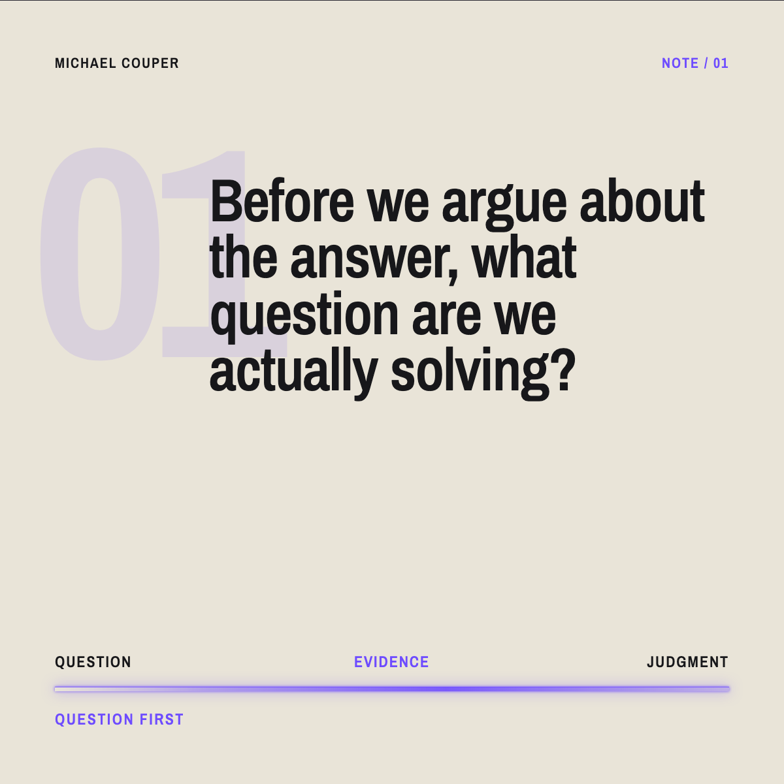
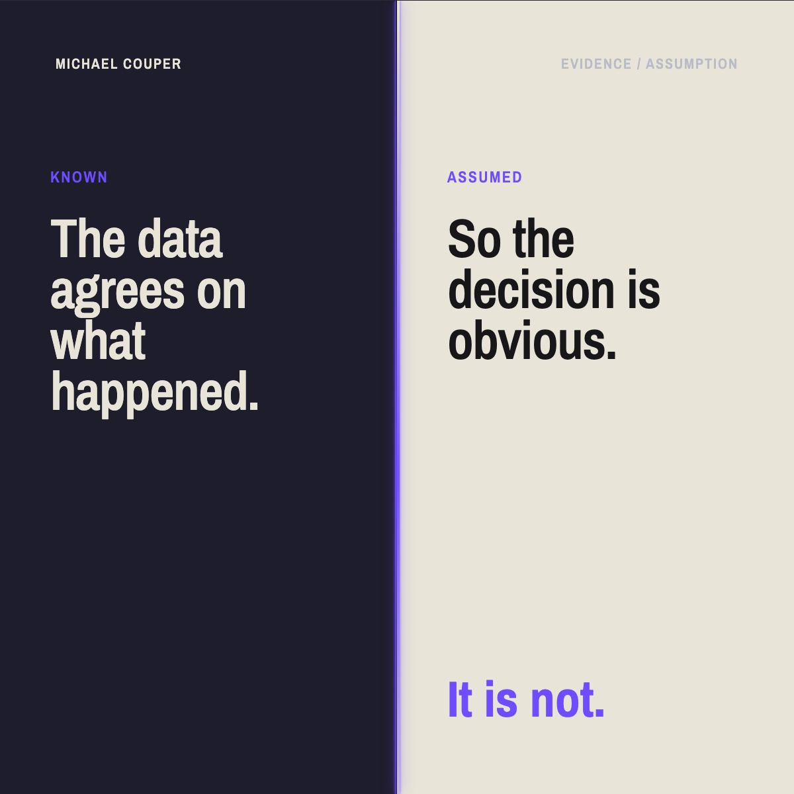
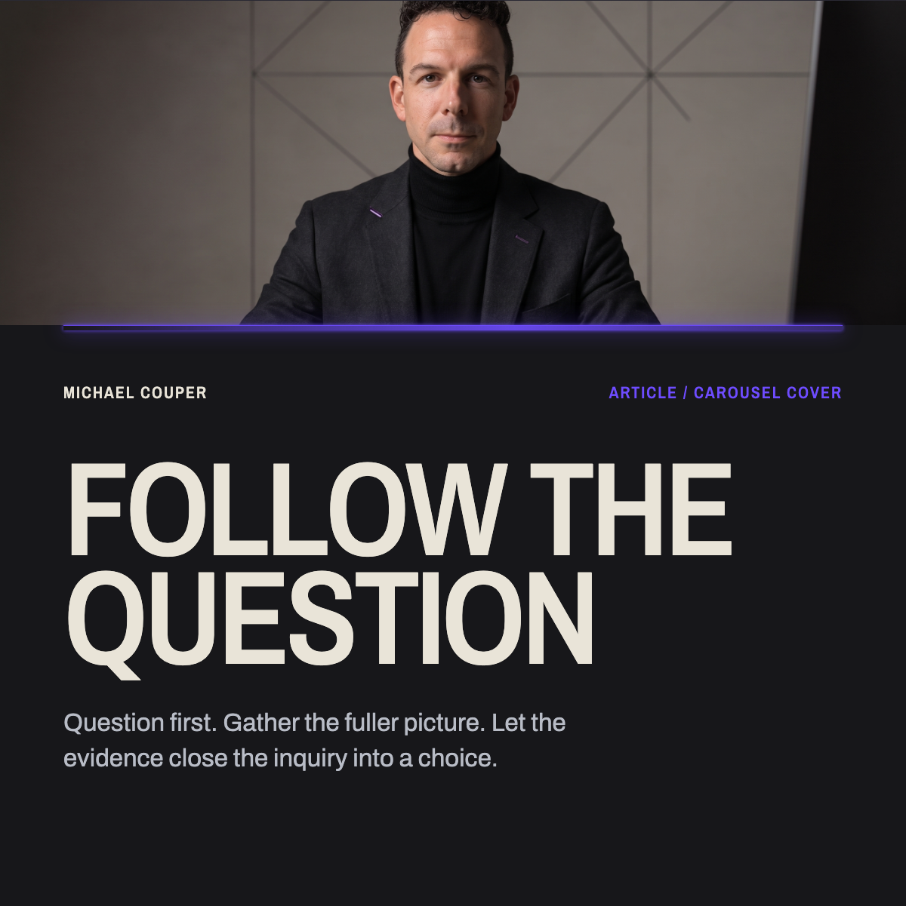


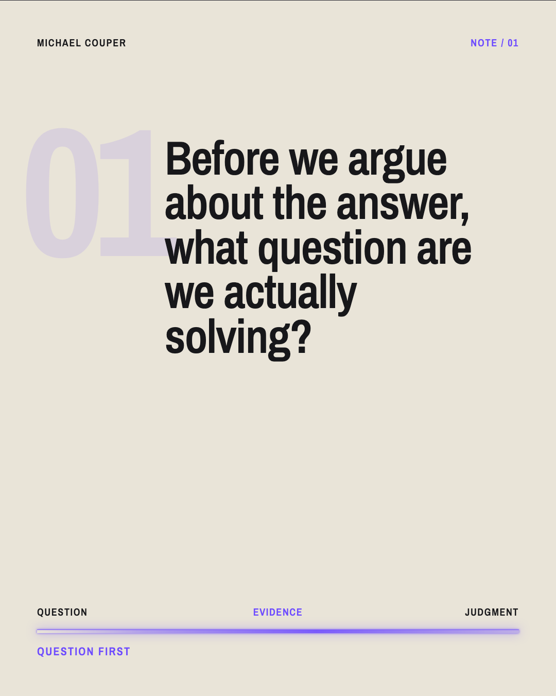
Video covers
Face-led, concept-led, and text-led covers in the Counterpoint world. Face-led covers stay on approved portraits only.

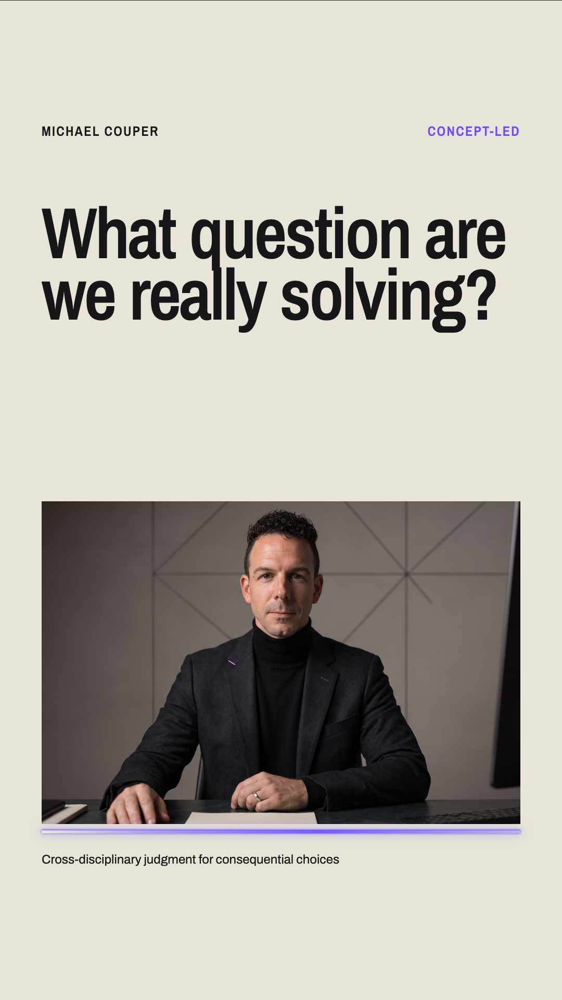

Voice
For PR and press
Next
Give this to anyone who needs to speak for Michael. Open Brand Therapy OS when you need the full rules, templates, or AI context.